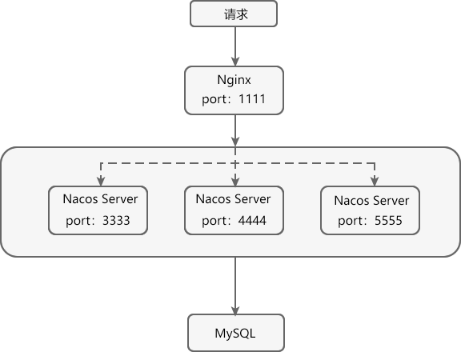

Nacos：Spring Cloud Alibaba服务注册与配置中心（非常详细）
Nacos 英文全称为 Dynamic Naming and Configuration Service，是一个由阿里巴巴团队使用 Java 语言开发的开源项目。
Nacos 是一个更易于帮助构建云原生应用的动态服务发现、配置和服务管理平台（参考自 Nacos 官网）。
Nacos 的命名是由 3 部分组成：
我们可以将 Nacos 理解成服务注册中心和配置中心的组合体，它可以替换 Eureka 作为服务注册中心，实现服务的注册与发现；还可以替换 Spring Cloud Config 作为配置中心，实现配置的动态刷新。
Nacos 作为服务注册中心经历了十年“双十一”的洪峰考验，具有简单易用、稳定可靠、性能卓越等优点，可以帮助用户更敏捷、容易地构建和管理微服务应用。
Nacos 支持几乎所有主流类型“服务”的发现、配置和管理：
动态配置消除了配置变更时重新部署应用和服务的需要，让配置管理变得更加高效、敏捷。
配置中心化管理让实现无状态服务变得更简单，让服务按需弹性扩展变得更容易。
Nacos 提供了一个简洁易用的 UI 帮助我们管理所有服务和应用的配置。Nacos 还提供包括配置版本跟踪、金丝雀发布、一键回滚配置以及客户端配置更新状态跟踪在内的一系列开箱即用的配置管理特性，帮助我们更安全地在生产环境中管理配置变更和降低配置变更带来的风险。
Nacos 提供了一些简单的 DNS APIs TODO，可以帮助我们管理服务的关联域名和可用的 IP:PORT 列表。
、
图1：Nacos 服务注册与发现
在图 1 中共涉及到以下 3 个角色：
Nacos 实现服务注册与发现的流程如下：
1. 使用浏览器访问 Nacos Server 下载页面，并在页面最下方点击链接 nacos-server-2.0.3.zip，如下图。
图2：Nacos Server 下载
2. 下载完成后，解压 nacos-server-2.0.3.zip，目录结构如下。
图3：Nacos Server 目录结构
Nacos Server 下各目录说明如下：
3. 打开命令行窗口，跳转到 Nacos Server 安装目录的 bin 下，执行以下命令，以单机模式启动 Nacos Server。
4. Nacos Server 启动日志如下。
5. 使用浏览器访问“http://localhost:8848/nacos”，跳转到 Nacos Server 登陆页面，如下图。
图4：Nacos Server 登陆页面
6. 在登陆页输入登录名和密码（默认都是 nacos），点击提交按钮，跳转到 Nacos Server 控制台主页，如下图。
图5：Nacos Server 控制台
自此，我们就完成了 Nacos Server 的下载、安装和运行工作。
1. 创建一个名为 spring-cloud-alibaba-demo 的 Maven 工程 ，该工程的 pom.xml 内容如下。
3. 在 spring-cloud-alibaba-provider-8001 的配置文件 application.properties 中添加以下配置，内容如下。
4. 在 net.biacheng.c.controller 包下，创建一个名为 DeptController 的 Controller 类，代码如下。
5. 在 spring-cloud-alibaba-provider-8001 的主启动类上，使用 @EnableDiscoveryClient 注解开启 Nacos 服务发现功能，代码如下。
6. 启动 spring-cloud-alibaba-provider-8001，使用浏览器访问“http://localhost:8001/dept/nacos/1”，结果如下图。
图6：服务提供者
7. 使用浏览器访问“http://localhost:8848/nacos”，查看“服务管理”下的“服务列表”，如下图。
从图 7 可以看到，我们搭建的服务提供者 spring-cloud-alibaba-provider-8001 所提供的服务已经被注册到了 Nacos Server 上了。
1. 在主工程 spring-cloud-alibaba-demo 下，创建一个名为 spring-cloud-alibaba-consumer-nacos-8801 的 Spring Boot 模块，并在其 pom.xml 中添加以下依赖。
3. 在 spring-cloud-alibaba-consumer-nacos-8801 的主启动类上，使用 @EnableDiscoveryClient 注解开启服务发现功能，代码如下。
4. 在 net.biancheng.c.config 包下创建一个名为 ApplicationContextBean 的配置类，并使用 @LoadBalanced 注解与 Ribbon 进行集成开启负载均衡功能，代码如下。
5. 在 net.biancheng.c.controller 包下，创建一个名为 DeptController_Consumer 的 Controller 类，代码如下。
6. 启动 spring-cloud-alibaba-consumer-nacos-8801，查看 Nacos Server 的服务列表，如下图。
7. 使用浏览器访问“http://localhost:8801/consumer/dept/nacos/1”，结果如下图。

图9：服务消费者调用服务
从配置管理的角度看，Nacos 可以说是 Spring Cloud Config 的替代方案，但相比后者 Nacos 的使用更简单，操作步骤也更少。
接下来，我们通过一个实例来演示下 Nacos 是如何实现配置的统一管理和动态刷新的。
1. 在主工程 spring-cloud-alibaba-demo 下，创建一个名为 spring-cloud-alibaba-config-client-3377 的 Spring Boot 模块，并在其 pom.xml 中添加以下依赖。
3. 在 spring-cloud-alibaba-config-client-3377 的类路径（例如 /resources 目录）下，添加一个 application.yml，配置内容如下。
4. 在 net.biancheng.c.controller 包下，创建一个名为 ConfigClientController 的 Controller 类，并在该类上使用 @RefreshScope 注解实现配置的自动更新，代码如下。
5. 在 spring-cloud-alibaba-config-client-3377 的主启动类上，使用 @EnableDiscoveryClient 注解开启服务发现功能，代码如下。
6. 启动 Nacos Server，并在 Nacos Server 控制台的“配置管理”下的“配置列表”中，点击“+”按钮，新建如下配置。
在 Nacos Server 中，配置的 dataId（即 Data ID）的完整格式如下：
dataId 格式中各参数说明如下：
7. 启动 spring-cloud-alibaba-config-client-3377，并使用浏览器访问“http://localhost:3377/config/info”，结果如下图。
图10：Nacos Config
8. 在 Nacos Server 中，将 config-client-dev.yaml 中的配置修改成如下内容。
9. 在不重启 spring-cloud-alibaba-config-client-3377 的情况下，使用浏览器再次访问“http://localhost:3377/config/info”，结果如下图。
图11：Nacos Cofig
Nacos Server 的集群化部署有一个十分明显的优点，那就是可以保障系统的高可用性。在集群化部署中，只要不是所有的 Nacos Server 都停止工作，Nacos Client 就还可以从集群中正常的 Nacos Server 上获取服务信息及配置，而不会导致系统的整体瘫痪，这就是 Nacos Server 集群化部署的高可用性。
下图展示了 Nacos Server 集群化部署的基本架构。
下面我们以 Windows 系统为例，演示如何部署 Nacos Server 集群。
1. 在 MySQL 中，新建一个名为 nacos_config 的数据库实例，并在该数据库下执行以下 SQL 语句。
2. 在 Nacos Server 安装目录下的 conf 文件夹中，将 cluster.conf.example 重命名为 cluster.conf，然后在该文件中添加以下内容。
配置说明如下：
3. 在 config 目录下的 application.properties 中，将 server.port（端口号）修改为 3333，并在该文件中添加 MySQL 数据库配置，具体修改内容如下。
5. 下载 Nginx，并修改 Nginx 中 conf 目录下的 nginx.conf 的配置，内容如下。
6. 启动集群中所有的 Nacos Server，当出现以下内容时，表示 Nacos Server 启动成功。
7. 当集群中的所有 Nacos Server 都启动成功后，双击 Nignx 安装目录下的 nginx.exe，启动 Nginx。
图13：Nginx 启动脚本
8. 使用浏览器访问“http://localhost:1111/nacos/”，若成功访问 Nacos Server 的控制台，则说明 Nacos 集群部署成功，如下图。

图14：Nacos 集群
9. 将主工程 spring-cloud-alibaba-demo 下所有子模块配置文件中的 Nacos Server 地址统一修改为：localhost:1111。我们以 spring-cloud-alibaba-consumer-nacos-8801 为例，配置文件 application.yml 的配置内容如下。
10. 重启 spring-cloud-alibaba-consumer-nacos-8801，并使用浏览器访问“http://localhost:1111/nacos”，查看“服务管理”下的“服务列表”，结果如下图。
Nacos 是一个更易于帮助构建云原生应用的动态服务发现、配置和服务管理平台（参考自 Nacos 官网）。
Nacos 的命名是由 3 部分组成：
| 组成部分 | 全称 | 描述 |
|---|---|---|
| Na | naming/nameServer | 即服务注册中心，与 Spring Cloud Eureka 的功能类似。 |
| co | configuration | 即配置中心，与 Spring Cloud Config+Spring Cloud Bus 的功能类似。 |
| s | service | 即服务，表示 Nacos 实现的服务注册中心和配置中心都是以服务为核心的。 |
我们可以将 Nacos 理解成服务注册中心和配置中心的组合体，它可以替换 Eureka 作为服务注册中心，实现服务的注册与发现；还可以替换 Spring Cloud Config 作为配置中心，实现配置的动态刷新。
Nacos 作为服务注册中心经历了十年“双十一”的洪峰考验，具有简单易用、稳定可靠、性能卓越等优点，可以帮助用户更敏捷、容易地构建和管理微服务应用。
Nacos 支持几乎所有主流类型“服务”的发现、配置和管理：
- Kubernetes Service
- gRPC & Dubbo RPC Service
- Spring Cloud RESTful Service
Nacos 的特性
Nacos 提供了一系列简单易用的特性，能够帮助我们快速地实现动态服务发现、服务配置等功能。服务发现
Nacos 支持基于 DNS 和 RPC 的服务发现。当服务提供者使用原生 SDK、OpenAPI 或一个独立的 Agent TODO 向 Nacos 注册服务后，服务消费者可以在 Nacos 上通过 DNS TODO 或 HTTP&API 查找、发现服务。服务健康监测
Nacos 提供对服务的实时健康检查，能够阻止请求发送到不健康主机或服务实例上。Nacos 还提供了一个健康检查仪表盘，能够帮助我们根据健康状态管理服务的可用性及流量。动态配置服务
动态配置服务可以让我们以中心化、外部化和动态化的方式，管理所有环境的应用配置和服务配置。动态配置消除了配置变更时重新部署应用和服务的需要，让配置管理变得更加高效、敏捷。
配置中心化管理让实现无状态服务变得更简单，让服务按需弹性扩展变得更容易。
Nacos 提供了一个简洁易用的 UI 帮助我们管理所有服务和应用的配置。Nacos 还提供包括配置版本跟踪、金丝雀发布、一键回滚配置以及客户端配置更新状态跟踪在内的一系列开箱即用的配置管理特性，帮助我们更安全地在生产环境中管理配置变更和降低配置变更带来的风险。
动态 DNS 服务
Nacos 提供了动态 DNS 服务，能够让我们更容易地实现负载均衡、流量控制以及数据中心内网的简单 DNS 解析服务。Nacos 提供了一些简单的 DNS APIs TODO，可以帮助我们管理服务的关联域名和可用的 IP:PORT 列表。
服务及其元数据管理
Nacos 能让我们从微服务平台建设的视角管理数据中心的所有服务及元数据，包括管理服务的描述、生命周期、服务的静态依赖分析、服务的健康状态、服务的流量管理、路由及安全策略、服务的 SLA 以及 metrics 统计数据。Nacos 两大组件
与 Eureka 类似，Nacos 也采用 CS（Client/Server，客户端/服务器）架构，它包含两大组件，如下表。、
| 组件 | 描述 | 功能 |
|---|---|---|
| Nacos Server | Nacos 服务端，与 Eureka Server 不同，Nacos Server 由阿里巴巴团队使用 Java 语言编写并将 Nacos Server 的下载地址给用户，用户只需要直接下载并运行即可。 | Nacos Server 可以作为服务注册中心，帮助 Nacos Client 实现服务的注册与发现。 |
| Nacos Server 可以作为配置中心，帮助 Nacos Client 在不重启的情况下，实现配置的动态刷新。 | ||
| Nacos Client | Nacos 客户端，通常指的是微服务架构中的各个服务，由用户自己搭建，可以使用多种语言编写。 | Nacos Client 通过添加依赖 spring-cloud-starter-alibaba-nacos-discovery，在服务注册中心（Nacos Server）中实现服务的注册与发现。 |
| Nacos Client 通过添加依赖 spring-cloud-starter-alibaba-nacos-config，在配置中心（Nacos Server）中实现配置的动态刷新。 |
Nacos 服务注册中心
Nacos 作为服务注册中心可以实现服务的注册与发现，流程如下图。图1：Nacos 服务注册与发现
在图 1 中共涉及到以下 3 个角色：
- 服务注册中心（Register Service）：它是一个 Nacos Server，可以为服务提供者和服务消费者提供服务注册和发现功能。
- 服务提供者（Provider Service）：它是一个 Nacos Client，用于对外服务。它将自己提供的服务注册到服务注册中心，以供服务消费者发现和调用。
- 服务消费者（Consumer Service）：它是一个 Nacos Client，用于消费服务。它可以从服务注册中心获取服务列表，调用所需的服务。
Nacos 实现服务注册与发现的流程如下：
- 从 Nacos 官方提供的下载页面中，下载 Nacos Server 并运行。
- 服务提供者 Nacos Client 启动时，会把服务以服务名（spring.application.name）的方式注册到服务注册中心（Nacos Server）；
- 服务消费者 Nacos Client 启动时，也会将自己的服务注册到服务注册中心；
- 服务消费者在注册服务的同时，它还会从服务注册中心获取一份服务注册列表信息，该列表中包含了所有注册到服务注册中心上的服务的信息（包括服务提供者和自身的信息）；
- 在获取了服务提供者的信息后，服务消费者通过 HTTP 或消息中间件远程调用服务提供者提供的服务。
安装和运行 Nacos Server
下面我们以 Nacos 2.0.3 为例，演示下如何安装和运行 Nacos Server，步骤如下。1. 使用浏览器访问 Nacos Server 下载页面，并在页面最下方点击链接 nacos-server-2.0.3.zip，如下图。
图2：Nacos Server 下载
2. 下载完成后，解压 nacos-server-2.0.3.zip，目录结构如下。
图3：Nacos Server 目录结构
Nacos Server 下各目录说明如下：
- bin：用于存放 Nacos 的可执行命令。
- conf：用于存放 Nacos 配置文件。
- target：用于存放 Nacos 应用的 jar 包。
3. 打开命令行窗口，跳转到 Nacos Server 安装目录的 bin 下，执行以下命令，以单机模式启动 Nacos Server。
startup.cmd -m standalone
4. Nacos Server 启动日志如下。
"nacos is starting with standalone"
,--.
,--.'|
,--,: : | Nacos 2.0.3
,`--.'`| ' : ,---. Running in stand alone mode, All function modules
| : : | | ' ,'\ .--.--. Port: 8848
: | \ | : ,--.--. ,---. / / | / / ' Pid: 27512
| : ' '; | / \ / \. ; ,. :| : /`./ Console: http://192.168.3.138:8848/nacos/index.html
' ' ;. ;.--. .-. | / / '' | |: :| : ;_
| | | \ | \__\/: . .. ' / ' | .; : \ \ `. https://nacos.io
' : | ; .' ," .--.; |' ; :__| : | `----. \
| | '`--' / / ,. |' | '.'|\ \ / / /`--' /
' : | ; : .' \ : : `----' '--'. /
; |.' | , .-./\ \ / `--'---'
'---' `--`---' `----'
2021-11-08 16:16:38,877 INFO Bean 'org.springframework.security.access.expression.method.DefaultMethodSecurityExpressionHandler@5ab9b447' of type [org.springframework.security.access.expression.method
.DefaultMethodSecurityExpressionHandler] is not eligible for getting processed by all BeanPostProcessors (for example: not eligible for auto-proxying)
2021-11-08 16:16:38,884 INFO Bean 'methodSecurityMetadataSource' of type [org.springframework.security.access.method.DelegatingMethodSecurityMetadataSource] is not eligible for getting processed by al
l BeanPostProcessors (for example: not eligible for auto-proxying)
2021-11-08 16:16:40,001 INFO Tomcat initialized with port(s): 8848 (http)
2021-11-08 16:16:40,713 INFO Root WebApplicationContext: initialization completed in 14868 ms
2021-11-08 16:16:52,351 INFO Initializing ExecutorService 'applicationTaskExecutor'
2021-11-08 16:16:52,560 INFO Adding welcome page: class path resource [static/index.html]
2021-11-08 16:16:54,239 INFO Creating filter chain: Ant [pattern='/**'], []
2021-11-08 16:16:54,344 INFO Creating filter chain: any request, [org.springframework.security.web.context.request.async.WebAsyncManagerIntegrationFilter@7dd611c8, org.springframework.security.web.con
text.SecurityContextPersistenceFilter@5c7668ba, org.springframework.security.web.header.HeaderWriterFilter@fb713e7, org.springframework.security.web.csrf.CsrfFilter@6ec7bce0, org.springframework.secur
ity.web.authentication.logout.LogoutFilter@7d9ba6c, org.springframework.security.web.savedrequest.RequestCacheAwareFilter@158f4cfe, org.springframework.security.web.servletapi.SecurityContextHolderAwa
reRequestFilter@6c6333cd, org.springframework.security.web.authentication.AnonymousAuthenticationFilter@5d425813, org.springframework.security.web.session.SessionManagementFilter@13741d5a, org.springf
ramework.security.web.access.ExceptionTranslationFilter@3727f0ee]
2021-11-08 16:16:54,948 INFO Initializing ExecutorService 'taskScheduler'
2021-11-08 16:16:54,977 INFO Exposing 16 endpoint(s) beneath base path '/actuator'
2021-11-08 16:16:55,309 INFO Tomcat started on port(s): 8848 (http) with context path '/nacos'
2021-11-08 16:16:55,319 INFO Nacos started successfully in stand alone mode. use embedded storage
5. 使用浏览器访问“http://localhost:8848/nacos”，跳转到 Nacos Server 登陆页面，如下图。
图4：Nacos Server 登陆页面
6. 在登陆页输入登录名和密码（默认都是 nacos），点击提交按钮，跳转到 Nacos Server 控制台主页，如下图。
图5：Nacos Server 控制台
自此，我们就完成了 Nacos Server 的下载、安装和运行工作。
搭建服务提供者
接下来，我们来搭建一个服务提供者，步骤如下。1. 创建一个名为 spring-cloud-alibaba-demo 的 Maven 工程 ，该工程的 pom.xml 内容如下。
<?xml version="1.0" encoding="UTF-8"?>
<project xmlns="http://maven.apache.org/POM/4.0.0"
xmlns:xsi="http://www.w3.org/2001/XMLSchema-instance"
xsi:schemaLocation="http://maven.apache.org/POM/4.0.0 http://maven.apache.org/xsd/maven-4.0.0.xsd">
<modelVersion>4.0.0</modelVersion>
<packaging>pom</packaging>
<parent>
<groupId>org.springframework.boot</groupId>
<artifactId>spring-boot-starter-parent</artifactId>
<version>2.5.6</version>
<relativePath/> <!-- lookup parent from repository -->
</parent>
<groupId>net.biancheng.c</groupId>
<artifactId>spring-cloud-alibaba-demo</artifactId>
<version>1.0-SNAPSHOT</version>
<properties>
<maven.compiler.source>8</maven.compiler.source>
<maven.compiler.target>8</maven.compiler.target>
<project.build.sourceEncoding>UTF-8</project.build.sourceEncoding>
<maven.compiler.source>1.8</maven.compiler.source>
<maven.compiler.target>1.8</maven.compiler.target>
<junit.version>4.12</junit.version>
<log4j.version>1.2.17</log4j.version>
<lombok.version>1.16.18</lombok.version>
<spring-cloud.version>2020.0.4</spring-cloud.version>
</properties>
<dependencyManagement>
<dependencies>
<!--Spring Cloud Alibaba 的版本信息-->
<dependency>
<groupId>com.alibaba.cloud</groupId>
<artifactId>spring-cloud-alibaba-dependencies</artifactId>
<version>2021.1</version>
<type>pom</type>
<scope>import</scope>
</dependency>
<!--Spring Cloud 的版本信息-->
<dependency>
<groupId>org.springframework.cloud</groupId>
<artifactId>spring-cloud-dependencies</artifactId>
<version>${spring-cloud.version}</version>
<type>pom</type>
<scope>import</scope>
</dependency>
</dependencies>
</dependencyManagement>
</project>
2. 在 spring-cloud-alibaba-demo 下，创建一个名为 spring-cloud-alibaba-provider-8001 的 Spring Boot 模块，并在其 pom.xml 中添加以下依赖，内容如下。在该工程的 pom.xml 中，我们通过 dependencyManagement 对 Spring Cloud Alibaba 的版本信息进行管理，该工程下的各个子模块在引入 Spring Cloud Alibaba 的各个组件时就不要单独指定版本号了。
<?xml version="1.0" encoding="UTF-8"?>
<project xmlns="http://maven.apache.org/POM/4.0.0" xmlns:xsi="http://www.w3.org/2001/XMLSchema-instance"
xsi:schemaLocation="http://maven.apache.org/POM/4.0.0 https://maven.apache.org/xsd/maven-4.0.0.xsd">
<modelVersion>4.0.0</modelVersion>
<!--父工程-->
<parent>
<groupId>net.biancheng.c</groupId>
<version>1.0-SNAPSHOT</version>
<artifactId>spring-cloud-alibaba-demo</artifactId>
</parent>
<groupId>net.biancheng.c</groupId>
<artifactId>spring-cloud-alibaba-provider-8001</artifactId>
<version>0.0.1-SNAPSHOT</version>
<name>spring-cloud-alibaba-provider-8001</name>
<description>Demo project for Spring Boot</description>
<properties>
<java.version>1.8</java.version>
</properties>
<dependencies>
<dependency>
<groupId>org.springframework.boot</groupId>
<artifactId>spring-boot-starter-web</artifactId>
</dependency>
<dependency>
<groupId>org.springframework.boot</groupId>
<artifactId>spring-boot-devtools</artifactId>
<scope>runtime</scope>
<optional>true</optional>
</dependency>
<dependency>
<groupId>org.projectlombok</groupId>
<artifactId>lombok</artifactId>
<optional>true</optional>
</dependency>
<dependency>
<groupId>org.springframework.boot</groupId>
<artifactId>spring-boot-starter-test</artifactId>
<scope>test</scope>
</dependency>
<!--Spring Cloud Alibaba Nacos discovery -->
<dependency>
<groupId>com.alibaba.cloud</groupId>
<artifactId>spring-cloud-starter-alibaba-nacos-discovery</artifactId>
</dependency>
</dependencies>
<build>
<plugins>
<plugin>
<groupId>org.springframework.boot</groupId>
<artifactId>spring-boot-maven-plugin</artifactId>
<configuration>
<excludes>
<exclude>
<groupId>org.projectlombok</groupId>
<artifactId>lombok</artifactId>
</exclude>
</excludes>
</configuration>
</plugin>
</plugins>
</build>
</project>
3. 在 spring-cloud-alibaba-provider-8001 的配置文件 application.properties 中添加以下配置，内容如下。
#端口号 server.port=8001 #服务名 spring.application.name=spring-cloud-alibaba-provider #Nacos Server 的地址 spring.cloud.nacos.discovery.server-addr=127.0.0.1:8848 management.endpoints.web.exposure.include=*
4. 在 net.biacheng.c.controller 包下，创建一个名为 DeptController 的 Controller 类，代码如下。
package net.biancheng.c.controller;
import lombok.extern.slf4j.Slf4j;
import org.springframework.beans.factory.annotation.Value;
import org.springframework.web.bind.annotation.GetMapping;
import org.springframework.web.bind.annotation.PathVariable;
import org.springframework.web.bind.annotation.RestController;
@RestController
@Slf4j
public class DeptController {
@Value("${server.port}")
private String serverPort;
@GetMapping(value = "/dept/nacos/{id}")
public String getPayment(@PathVariable("id") Integer id) {
return "<h2>c语言中文网提醒您，服务访问成功！</h2>服务名：spring-cloud-alibaba-provider<br /> 端口号： " + serverPort + "<br /> 传入的参数：" + id;
}
}
5. 在 spring-cloud-alibaba-provider-8001 的主启动类上，使用 @EnableDiscoveryClient 注解开启 Nacos 服务发现功能，代码如下。
package net.biancheng.c;
import org.springframework.boot.SpringApplication;
import org.springframework.boot.autoconfigure.SpringBootApplication;
import org.springframework.cloud.client.discovery.EnableDiscoveryClient;
@SpringBootApplication
@EnableDiscoveryClient //开启服务发现功能
public class SpringCloudAlibabaProvider8001Application {
public static void main(String[] args) {
SpringApplication.run(SpringCloudAlibabaProvider8001Application.class, args);
}
}
6. 启动 spring-cloud-alibaba-provider-8001，使用浏览器访问“http://localhost:8001/dept/nacos/1”，结果如下图。
图6：服务提供者
7. 使用浏览器访问“http://localhost:8848/nacos”，查看“服务管理”下的“服务列表”，如下图。
从图 7 可以看到，我们搭建的服务提供者 spring-cloud-alibaba-provider-8001 所提供的服务已经被注册到了 Nacos Server 上了。
搭建服务消费者
下面，我们就来搭建一个服务消费者来消费 spring-cloud-alibaba-provider-8001 提供的服务，步骤如下。1. 在主工程 spring-cloud-alibaba-demo 下，创建一个名为 spring-cloud-alibaba-consumer-nacos-8801 的 Spring Boot 模块，并在其 pom.xml 中添加以下依赖。
<?xml version="1.0" encoding="UTF-8"?> <project xmlns="http://maven.apache.org/POM/4.0.0" xmlns:xsi="http://www.w3.org/2001/XMLSchema-instance" xsi:schemaLocation="http://maven.apache.org/POM/4.0.0 https://maven.apache.org/xsd/maven-4.0.0.xsd"> <modelVersion>4.0.0</modelVersion> <parent> <groupId>net.biancheng.c</groupId> <version>1.0-SNAPSHOT</version> <artifactId>spring-cloud-alibaba-demo</artifactId> </parent> <groupId>net.biancheng.c</groupId> <artifactId>spring-cloud-alibaba-consumer-nacos-8081</artifactId> <version>0.0.1-SNAPSHOT</version> <name>spring-cloud-alibaba-consumer-nacos-8081</name> <description>Demo project for Spring Boot</description> <properties> <java.version>1.8</java.version> </properties> <dependencies> <!--SpringCloud ailibaba nacos discovery--> <dependency> <groupId>com.alibaba.cloud</groupId> <artifactId>spring-cloud-starter-alibaba-nacos-discovery</artifactId> </dependency> <!--由于 Netflix Ribbon 进入停更维护阶段，因此新版本的 Nacos discovery 都已经移除了 Ribbon ，此时我们需要引入 loadbalancer 代替 --> <dependency> <groupId>org.springframework.cloud</groupId> <artifactId>spring-cloud-loadbalancer</artifactId> </dependency> <dependency> <groupId>org.springframework.boot</groupId> <artifactId>spring-boot-starter-web</artifactId> </dependency> <dependency> <groupId>org.springframework.boot</groupId> <artifactId>spring-boot-devtools</artifactId> <scope>runtime</scope> <optional>true</optional> </dependency> <dependency> <groupId>org.projectlombok</groupId> <artifactId>lombok</artifactId> <optional>true</optional> </dependency> <dependency> <groupId>org.springframework.boot</groupId> <artifactId>spring-boot-starter-test</artifactId> <scope>test</scope> </dependency> </dependencies> <build> <plugins> <plugin> <groupId>org.springframework.boot</groupId> <artifactId>spring-boot-maven-plugin</artifactId> <configuration> <excludes> <exclude> <groupId>org.projectlombok</groupId> <artifactId>lombok</artifactId> </exclude> </excludes> </configuration> </plugin> </plugins> </build> </project>
2. 在 spring-cloud-alibaba-consumer-nacos-8801 的配置文件 application.yml 中，添加以下配置。注意：由于 Netflix Ribbon 已经进入停更维护状态，Nacos Discovery 已经停了对 Ribbon 的支持，因此我们需要在服务消费者的 pom.xml 中引入 spring-cloud-loadbalancer 才能调用服务提供者提供的服务。
server:
port: 8801 #端口号
spring:
application:
name: spring-cloud-alibaba-consumer #服务名
cloud:
nacos:
discovery:
server-addr: localhost:8848 #Nacos server 的地址
#以下配置信息并不是默认配置，而是我们自定义的配置，目的是不在 Controller 内硬编码服务提供者的服务名
service-url:
nacos-user-service: http://spring-cloud-alibaba-provider #服务提供者的服务名
3. 在 spring-cloud-alibaba-consumer-nacos-8801 的主启动类上，使用 @EnableDiscoveryClient 注解开启服务发现功能，代码如下。
package net.biancheng.c;
import org.springframework.boot.SpringApplication;
import org.springframework.boot.autoconfigure.SpringBootApplication;
import org.springframework.cloud.client.discovery.EnableDiscoveryClient;
@SpringBootApplication
@EnableDiscoveryClient // 开启服务注册与发现功能
public class SpringCloudAlibabaConsumerNacos8801Application {
public static void main(String[] args) {
SpringApplication.run(SpringCloudAlibabaConsumerNacos8081Application.class, args);
}
}
4. 在 net.biancheng.c.config 包下创建一个名为 ApplicationContextBean 的配置类，并使用 @LoadBalanced 注解与 Ribbon 进行集成开启负载均衡功能，代码如下。
package net.biancheng.c.config;
import org.springframework.cloud.client.loadbalancer.LoadBalanced;
import org.springframework.context.annotation.Bean;
import org.springframework.context.annotation.Configuration;
import org.springframework.web.client.RestTemplate;
@Configuration
public class ApplicationContextBean {
@Bean
@LoadBalanced //与 Ribbon 集成，并开启负载均衡功能
public RestTemplate getRestTemplate() {
return new RestTemplate();
}
}
5. 在 net.biancheng.c.controller 包下，创建一个名为 DeptController_Consumer 的 Controller 类，代码如下。
package net.biancheng.c.controller;
import lombok.extern.slf4j.Slf4j;
import org.springframework.beans.factory.annotation.Value;
import org.springframework.web.bind.annotation.GetMapping;
import org.springframework.web.bind.annotation.PathVariable;
import org.springframework.web.bind.annotation.RestController;
import org.springframework.web.client.RestTemplate;
import javax.annotation.Resource;
@RestController
@Slf4j
public class DeptController_Consumer {
@Resource
private RestTemplate restTemplate;
@Value("${service-url.nacos-user-service}")
private String serverURL; //服务提供者的服务名
@GetMapping("/consumer/dept/nacos/{id}")
public String paymentInfo(@PathVariable("id") Long id) {
return restTemplate.getForObject(serverURL + "/dept/nacos/" + id, String.class);
}
}
6. 启动 spring-cloud-alibaba-consumer-nacos-8801，查看 Nacos Server 的服务列表，如下图。
7. 使用浏览器访问“http://localhost:8801/consumer/dept/nacos/1”，结果如下图。
图9：服务消费者调用服务
Nacos 配置中心
Nacos Server 还可以作为配置中心，对 Spring Cloud 应用的外部配置进行统一地集中化管理。而我们只需要在应用的 POM 文件中引入 spring-cloud-starter-alibaba-nacos-config 即可实现配置的获取与动态刷新。从配置管理的角度看，Nacos 可以说是 Spring Cloud Config 的替代方案，但相比后者 Nacos 的使用更简单，操作步骤也更少。
接下来，我们通过一个实例来演示下 Nacos 是如何实现配置的统一管理和动态刷新的。
1. 在主工程 spring-cloud-alibaba-demo 下，创建一个名为 spring-cloud-alibaba-config-client-3377 的 Spring Boot 模块，并在其 pom.xml 中添加以下依赖。
<?xml version="1.0" encoding="UTF-8"?>
<project xmlns="http://maven.apache.org/POM/4.0.0" xmlns:xsi="http://www.w3.org/2001/XMLSchema-instance"
xsi:schemaLocation="http://maven.apache.org/POM/4.0.0 https://maven.apache.org/xsd/maven-4.0.0.xsd">
<modelVersion>4.0.0</modelVersion>
<parent>
<groupId>net.biancheng.c</groupId>
<version>1.0-SNAPSHOT</version>
<artifactId>spring-cloud-alibaba-demo</artifactId>
</parent>
<groupId>net.biancheng.c</groupId>
<artifactId>spring-cloud-alibaba-config-client-3377</artifactId>
<version>0.0.1-SNAPSHOT</version>
<name>spring-cloud-alibaba-nacos-config-client-3377</name>
<description>Demo project for Spring Boot</description>
<properties>
<java.version>1.8</java.version>
</properties>
<dependencies>
<dependency>
<groupId>org.springframework.boot</groupId>
<artifactId>spring-boot-starter-web</artifactId>
</dependency>
<!--SpringCloud2020及以后的版本默认不启用 bootstrap 配置，我们需要在pom里面显式地引入：-->
<dependency>
<groupId>org.springframework.cloud</groupId>
<artifactId>spring-cloud-starter-bootstrap</artifactId>
</dependency>
<dependency>
<groupId>org.springframework.boot</groupId>
<artifactId>spring-boot-devtools</artifactId>
<scope>runtime</scope>
<optional>true</optional>
</dependency>
<dependency>
<groupId>org.projectlombok</groupId>
<artifactId>lombok</artifactId>
<optional>true</optional>
</dependency>
<dependency>
<groupId>org.springframework.boot</groupId>
<artifactId>spring-boot-starter-test</artifactId>
<scope>test</scope>
</dependency>
<!--Spring Cloud Alibaba Config 依赖-->
<dependency>
<groupId>com.alibaba.cloud</groupId>
<artifactId>spring-cloud-starter-alibaba-nacos-config</artifactId>
</dependency>
<!--SpringCloud ailibaba nacos 服务注册与发现模块 -->
<dependency>
<groupId>com.alibaba.cloud</groupId>
<artifactId>spring-cloud-starter-alibaba-nacos-discovery</artifactId>
</dependency>
<!--Spring Boot 监控模块-->
<dependency>
<groupId>org.springframework.boot</groupId>
<artifactId>spring-boot-starter-actuator</artifactId>
</dependency>
</dependencies>
<build>
<plugins>
<plugin>
<groupId>org.springframework.boot</groupId>
<artifactId>spring-boot-maven-plugin</artifactId>
<configuration>
<excludes>
<exclude>
<groupId>org.projectlombok</groupId>
<artifactId>lombok</artifactId>
</exclude>
</excludes>
</configuration>
</plugin>
</plugins>
</build>
</project>
2. 在 spring-cloud-alibaba-config-client-3377 的类路径（例如 /resources 目录）下，添加一个 bootstrap.yml，配置内容如下。注意：我们使用的 Spring Cloud 2020 版本默认不启用 bootstrap，若想要在应用启动时加载 bootstrap 配置（例如 bootstrap.yml 或 bootstrap.properties），就需要我们在 pom.xml 中显式的引入 spring-cloud-starter-bootstrap 依赖。
server:
port: 3377 #端口号
spring:
application:
name: config-client #服务名
cloud:
nacos:
discovery:
server-addr: 127.0.0.1:8848 #Nacos服务注册中心地址
config:
server-addr: 127.0.0.1:8848 #Nacos作为配置中心地址
file-extension: yaml #指定yaml格式的配置
3. 在 spring-cloud-alibaba-config-client-3377 的类路径（例如 /resources 目录）下，添加一个 application.yml，配置内容如下。
spring:
profiles:
active: dev #激活 dev 的配置
4. 在 net.biancheng.c.controller 包下，创建一个名为 ConfigClientController 的 Controller 类，并在该类上使用 @RefreshScope 注解实现配置的自动更新，代码如下。
package net.biancheng.c.controller;
import org.springframework.beans.factory.annotation.Value;
import org.springframework.cloud.context.config.annotation.RefreshScope;
import org.springframework.web.bind.annotation.GetMapping;
import org.springframework.web.bind.annotation.RestController;
@RestController
@RefreshScope
public class ConfigClientController {
@Value("${config.info}")
private String ConfigInfo;
@GetMapping("/config/info")
public String getConfigInfo(){
return ConfigInfo;
}
}
5. 在 spring-cloud-alibaba-config-client-3377 的主启动类上，使用 @EnableDiscoveryClient 注解开启服务发现功能，代码如下。
package net.biancheng.c;
import org.springframework.boot.SpringApplication;
import org.springframework.boot.autoconfigure.SpringBootApplication;
import org.springframework.cloud.client.discovery.EnableDiscoveryClient;
@SpringBootApplication
@EnableDiscoveryClient
public class SpringCloudAlibabaNacosConfigClient3377Application {
public static void main(String[] args) {
SpringApplication.run(SpringCloudAlibabaNacosConfigClient3377Application.class, args);
}
}
6. 启动 Nacos Server，并在 Nacos Server 控制台的“配置管理”下的“配置列表”中，点击“+”按钮，新建如下配置。
Data ID: config-client-dev.yaml
Group : DEFAULT_GROUP
配置格式: YAML
配置内容: config:
info: c.biancheng.net
在 Nacos Server 中，配置的 dataId（即 Data ID）的完整格式如下：
${prefix}-${spring.profiles.active}.${file-extension}
dataId 格式中各参数说明如下：
- ${prefix}：默认取值为微服务的服务名，即配置文件中 spring.application.name 的值，我们可以在配置文件中通过配置 spring.cloud.nacos.config.prefix 来指定。
- ${spring.profiles.active}：表示当前环境对应的 Profile，例如 dev、test、prod 等。当没有指定环境的 Profile 时，其对应的连接符也将不存在， dataId 的格式变成 ${prefix}.${file-extension}。
- ${file-extension}：表示配置内容的数据格式，我们可以在配置文件中通过配置项 spring.cloud.nacos.config.file-extension 来配置，例如 properties 和 yaml。
7. 启动 spring-cloud-alibaba-config-client-3377，并使用浏览器访问“http://localhost:3377/config/info”，结果如下图。
图10：Nacos Config
8. 在 Nacos Server 中，将 config-client-dev.yaml 中的配置修改成如下内容。
config:
info: this is c.biancheng.net
9. 在不重启 spring-cloud-alibaba-config-client-3377 的情况下，使用浏览器再次访问“http://localhost:3377/config/info”，结果如下图。
图11：Nacos Cofig
Nacos Server 集群化部署
在实际的项目开发中，一个微服务系统往往由十几，几十个甚至几百个微服务组成。 这些服务若全部注册到同一台 Nacos Server，就极有可能导致 Nacos Server 因为不堪重负而崩溃，最终导致整个微服务系统瘫痪。解决这个问题最直接的办法就是使用 Nacos Server 集群。Nacos Server 的集群化部署有一个十分明显的优点，那就是可以保障系统的高可用性。在集群化部署中，只要不是所有的 Nacos Server 都停止工作，Nacos Client 就还可以从集群中正常的 Nacos Server 上获取服务信息及配置，而不会导致系统的整体瘫痪，这就是 Nacos Server 集群化部署的高可用性。
下图展示了 Nacos Server 集群化部署的基本架构。

图12：Nacos Server 集群架构
图12：Nacos Server 集群架构
下面我们以 Windows 系统为例，演示如何部署 Nacos Server 集群。
1. 在 MySQL 中，新建一个名为 nacos_config 的数据库实例，并在该数据库下执行以下 SQL 语句。
/******************************************/
/* 数据库全名 = nacos_config */
/* 表名称 = config_info */
/******************************************/
CREATE TABLE `config_info` (
`id` bigint(20) NOT NULL AUTO_INCREMENT COMMENT 'id',
`data_id` varchar(255) NOT NULL COMMENT 'data_id',
`group_id` varchar(255) DEFAULT NULL,
`content` longtext NOT NULL COMMENT 'content',
`md5` varchar(32) DEFAULT NULL COMMENT 'md5',
`gmt_create` datetime NOT NULL DEFAULT CURRENT_TIMESTAMP COMMENT '创建时间',
`gmt_modified` datetime NOT NULL DEFAULT CURRENT_TIMESTAMP COMMENT '修改时间',
`src_user` text COMMENT 'source user',
`src_ip` varchar(50) DEFAULT NULL COMMENT 'source ip',
`app_name` varchar(128) DEFAULT NULL,
`tenant_id` varchar(128) DEFAULT '' COMMENT '租户字段',
`c_desc` varchar(256) DEFAULT NULL,
`c_use` varchar(64) DEFAULT NULL,
`effect` varchar(64) DEFAULT NULL,
`type` varchar(64) DEFAULT NULL,
`c_schema` text,
PRIMARY KEY (`id`),
UNIQUE KEY `uk_configinfo_datagrouptenant` (`data_id`,`group_id`,`tenant_id`)
) ENGINE=InnoDB DEFAULT CHARSET=utf8 COLLATE=utf8_bin COMMENT='config_info';
/******************************************/
/* 数据库全名 = nacos_config */
/* 表名称 = config_info_aggr */
/******************************************/
CREATE TABLE `config_info_aggr` (
`id` bigint(20) NOT NULL AUTO_INCREMENT COMMENT 'id',
`data_id` varchar(255) NOT NULL COMMENT 'data_id',
`group_id` varchar(255) NOT NULL COMMENT 'group_id',
`datum_id` varchar(255) NOT NULL COMMENT 'datum_id',
`content` longtext NOT NULL COMMENT '内容',
`gmt_modified` datetime NOT NULL COMMENT '修改时间',
`app_name` varchar(128) DEFAULT NULL,
`tenant_id` varchar(128) DEFAULT '' COMMENT '租户字段',
PRIMARY KEY (`id`),
UNIQUE KEY `uk_configinfoaggr_datagrouptenantdatum` (`data_id`,`group_id`,`tenant_id`,`datum_id`)
) ENGINE=InnoDB DEFAULT CHARSET=utf8 COLLATE=utf8_bin COMMENT='增加租户字段';
/******************************************/
/* 数据库全名 = nacos_config */
/* 表名称 = config_info_beta */
/******************************************/
CREATE TABLE `config_info_beta` (
`id` bigint(20) NOT NULL AUTO_INCREMENT COMMENT 'id',
`data_id` varchar(255) NOT NULL COMMENT 'data_id',
`group_id` varchar(128) NOT NULL COMMENT 'group_id',
`app_name` varchar(128) DEFAULT NULL COMMENT 'app_name',
`content` longtext NOT NULL COMMENT 'content',
`beta_ips` varchar(1024) DEFAULT NULL COMMENT 'betaIps',
`md5` varchar(32) DEFAULT NULL COMMENT 'md5',
`gmt_create` datetime NOT NULL DEFAULT CURRENT_TIMESTAMP COMMENT '创建时间',
`gmt_modified` datetime NOT NULL DEFAULT CURRENT_TIMESTAMP COMMENT '修改时间',
`src_user` text COMMENT 'source user',
`src_ip` varchar(50) DEFAULT NULL COMMENT 'source ip',
`tenant_id` varchar(128) DEFAULT '' COMMENT '租户字段',
PRIMARY KEY (`id`),
UNIQUE KEY `uk_configinfobeta_datagrouptenant` (`data_id`,`group_id`,`tenant_id`)
) ENGINE=InnoDB DEFAULT CHARSET=utf8 COLLATE=utf8_bin COMMENT='config_info_beta';
/******************************************/
/* 数据库全名 = nacos_config */
/* 表名称 = config_info_tag */
/******************************************/
CREATE TABLE `config_info_tag` (
`id` bigint(20) NOT NULL AUTO_INCREMENT COMMENT 'id',
`data_id` varchar(255) NOT NULL COMMENT 'data_id',
`group_id` varchar(128) NOT NULL COMMENT 'group_id',
`tenant_id` varchar(128) DEFAULT '' COMMENT 'tenant_id',
`tag_id` varchar(128) NOT NULL COMMENT 'tag_id',
`app_name` varchar(128) DEFAULT NULL COMMENT 'app_name',
`content` longtext NOT NULL COMMENT 'content',
`md5` varchar(32) DEFAULT NULL COMMENT 'md5',
`gmt_create` datetime NOT NULL DEFAULT CURRENT_TIMESTAMP COMMENT '创建时间',
`gmt_modified` datetime NOT NULL DEFAULT CURRENT_TIMESTAMP COMMENT '修改时间',
`src_user` text COMMENT 'source user',
`src_ip` varchar(50) DEFAULT NULL COMMENT 'source ip',
PRIMARY KEY (`id`),
UNIQUE KEY `uk_configinfotag_datagrouptenanttag` (`data_id`,`group_id`,`tenant_id`,`tag_id`)
) ENGINE=InnoDB DEFAULT CHARSET=utf8 COLLATE=utf8_bin COMMENT='config_info_tag';
/******************************************/
/* 数据库全名 = nacos_config */
/* 表名称 = config_tags_relation */
/******************************************/
CREATE TABLE `config_tags_relation` (
`id` bigint(20) NOT NULL COMMENT 'id',
`tag_name` varchar(128) NOT NULL COMMENT 'tag_name',
`tag_type` varchar(64) DEFAULT NULL COMMENT 'tag_type',
`data_id` varchar(255) NOT NULL COMMENT 'data_id',
`group_id` varchar(128) NOT NULL COMMENT 'group_id',
`tenant_id` varchar(128) DEFAULT '' COMMENT 'tenant_id',
`nid` bigint(20) NOT NULL AUTO_INCREMENT,
PRIMARY KEY (`nid`),
UNIQUE KEY `uk_configtagrelation_configidtag` (`id`,`tag_name`,`tag_type`),
KEY `idx_tenant_id` (`tenant_id`)
) ENGINE=InnoDB DEFAULT CHARSET=utf8 COLLATE=utf8_bin COMMENT='config_tag_relation';
/******************************************/
/* 数据库全名 = nacos_config */
/* 表名称 = group_capacity */
/******************************************/
CREATE TABLE `group_capacity` (
`id` bigint(20) unsigned NOT NULL AUTO_INCREMENT COMMENT '主键ID',
`group_id` varchar(128) NOT NULL DEFAULT '' COMMENT 'Group ID，空字符表示整个集群',
`quota` int(10) unsigned NOT NULL DEFAULT '0' COMMENT '配额，0表示使用默认值',
`usage` int(10) unsigned NOT NULL DEFAULT '0' COMMENT '使用量',
`max_size` int(10) unsigned NOT NULL DEFAULT '0' COMMENT '单个配置大小上限，单位为字节，0表示使用默认值',
`max_aggr_count` int(10) unsigned NOT NULL DEFAULT '0' COMMENT '聚合子配置最大个数，，0表示使用默认值',
`max_aggr_size` int(10) unsigned NOT NULL DEFAULT '0' COMMENT '单个聚合数据的子配置大小上限，单位为字节，0表示使用默认值',
`max_history_count` int(10) unsigned NOT NULL DEFAULT '0' COMMENT '最大变更历史数量',
`gmt_create` datetime NOT NULL DEFAULT CURRENT_TIMESTAMP COMMENT '创建时间',
`gmt_modified` datetime NOT NULL DEFAULT CURRENT_TIMESTAMP COMMENT '修改时间',
PRIMARY KEY (`id`),
UNIQUE KEY `uk_group_id` (`group_id`)
) ENGINE=InnoDB DEFAULT CHARSET=utf8 COLLATE=utf8_bin COMMENT='集群、各Group容量信息表';
/******************************************/
/* 数据库全名 = nacos_config */
/* 表名称 = his_config_info */
/******************************************/
CREATE TABLE `his_config_info` (
`id` bigint(64) unsigned NOT NULL,
`nid` bigint(20) unsigned NOT NULL AUTO_INCREMENT,
`data_id` varchar(255) NOT NULL,
`group_id` varchar(128) NOT NULL,
`app_name` varchar(128) DEFAULT NULL COMMENT 'app_name',
`content` longtext NOT NULL,
`md5` varchar(32) DEFAULT NULL,
`gmt_create` datetime NOT NULL DEFAULT CURRENT_TIMESTAMP,
`gmt_modified` datetime NOT NULL DEFAULT CURRENT_TIMESTAMP,
`src_user` text,
`src_ip` varchar(50) DEFAULT NULL,
`op_type` char(10) DEFAULT NULL,
`tenant_id` varchar(128) DEFAULT '' COMMENT '租户字段',
PRIMARY KEY (`nid`),
KEY `idx_gmt_create` (`gmt_create`),
KEY `idx_gmt_modified` (`gmt_modified`),
KEY `idx_did` (`data_id`)
) ENGINE=InnoDB DEFAULT CHARSET=utf8 COLLATE=utf8_bin COMMENT='多租户改造';
/******************************************/
/* 数据库全名 = nacos_config */
/* 表名称 = tenant_capacity */
/******************************************/
CREATE TABLE `tenant_capacity` (
`id` bigint(20) unsigned NOT NULL AUTO_INCREMENT COMMENT '主键ID',
`tenant_id` varchar(128) NOT NULL DEFAULT '' COMMENT 'Tenant ID',
`quota` int(10) unsigned NOT NULL DEFAULT '0' COMMENT '配额，0表示使用默认值',
`usage` int(10) unsigned NOT NULL DEFAULT '0' COMMENT '使用量',
`max_size` int(10) unsigned NOT NULL DEFAULT '0' COMMENT '单个配置大小上限，单位为字节，0表示使用默认值',
`max_aggr_count` int(10) unsigned NOT NULL DEFAULT '0' COMMENT '聚合子配置最大个数',
`max_aggr_size` int(10) unsigned NOT NULL DEFAULT '0' COMMENT '单个聚合数据的子配置大小上限，单位为字节，0表示使用默认值',
`max_history_count` int(10) unsigned NOT NULL DEFAULT '0' COMMENT '最大变更历史数量',
`gmt_create` datetime NOT NULL DEFAULT CURRENT_TIMESTAMP COMMENT '创建时间',
`gmt_modified` datetime NOT NULL DEFAULT CURRENT_TIMESTAMP COMMENT '修改时间',
PRIMARY KEY (`id`),
UNIQUE KEY `uk_tenant_id` (`tenant_id`)
) ENGINE=InnoDB DEFAULT CHARSET=utf8 COLLATE=utf8_bin COMMENT='租户容量信息表';
CREATE TABLE `tenant_info` (
`id` bigint(20) NOT NULL AUTO_INCREMENT COMMENT 'id',
`kp` varchar(128) NOT NULL COMMENT 'kp',
`tenant_id` varchar(128) default '' COMMENT 'tenant_id',
`tenant_name` varchar(128) default '' COMMENT 'tenant_name',
`tenant_desc` varchar(256) DEFAULT NULL COMMENT 'tenant_desc',
`create_source` varchar(32) DEFAULT NULL COMMENT 'create_source',
`gmt_create` bigint(20) NOT NULL COMMENT '创建时间',
`gmt_modified` bigint(20) NOT NULL COMMENT '修改时间',
PRIMARY KEY (`id`),
UNIQUE KEY `uk_tenant_info_kptenantid` (`kp`,`tenant_id`),
KEY `idx_tenant_id` (`tenant_id`)
) ENGINE=InnoDB DEFAULT CHARSET=utf8 COLLATE=utf8_bin COMMENT='tenant_info';
CREATE TABLE `users` (
`username` varchar(50) NOT NULL PRIMARY KEY,
`password` varchar(500) NOT NULL,
`enabled` boolean NOT NULL
);
CREATE TABLE `roles` (
`username` varchar(50) NOT NULL,
`role` varchar(50) NOT NULL,
UNIQUE INDEX `idx_user_role` (`username` ASC, `role` ASC) USING BTREE
);
CREATE TABLE `permissions` (
`role` varchar(50) NOT NULL,
`resource` varchar(255) NOT NULL,
`action` varchar(8) NOT NULL,
UNIQUE INDEX `uk_role_permission` (`role`,`resource`,`action`) USING BTREE
);
INSERT INTO users (username, password, enabled) VALUES ('nacos', '$2a$10$EuWPZHzz32dJN7jexM34MOeYirDdFAZm2kuWj7VEOJhhZkDrxfvUu', TRUE);
INSERT INTO roles (username, role) VALUES ('nacos', 'ROLE_ADMIN');
2. 在 Nacos Server 安装目录下的 conf 文件夹中，将 cluster.conf.example 重命名为 cluster.conf，然后在该文件中添加以下内容。
192.168.3.138:3333 192.168.3.138:4444 192.168.3.138:5555
配置说明如下：
- 192.168.138 为本地电脑主机的 IP 地址，这里最好不要写成 localhost 或 127.0.0.1，否则 Nacos Server 集群可能会搭建失败！
- 本次搭建的 Nacos Server 集群的端口分别为：3333、4444、5555。
3. 在 config 目录下的 application.properties 中，将 server.port（端口号）修改为 3333，并在该文件中添加 MySQL 数据库配置，具体修改内容如下。
server.port=3333 ################ MySQL 数据库配置################## spring.datasource.platform=mysql db.num=1 db.url.0=jdbc:mysql://127.0.0.1:3306/nacos_config?characterEncoding=utf8&connectTimeout=1000&socketTimeout=3000&autoReconnect=true&useUnicode=true&useSSL=false&serverTimezone=Asia/Shanghai db.user=root db.password=root4. 将该 Nacos Server 目录复制到另外两台机器上，并将它们的端口号分别修改为： 4444 和 5555。
5. 下载 Nginx，并修改 Nginx 中 conf 目录下的 nginx.conf 的配置，内容如下。
#user nobody;
worker_processes 1;
#error_log logs/error.log;
#error_log logs/error.log notice;
#error_log logs/error.log info;
#pid logs/nginx.pid;
events {
worker_connections 1024;
}
http {
include mime.types;
default_type application/octet-stream;
sendfile on;
keepalive_timeout 65;
upstream cluster{
server 127.0.0.1:3333;
server 127.0.0.1:4444;
server 127.0.0.1:5555;
}
server {
listen 1111;
server_name localhost;
#charset koi8-r;
#access_log logs/host.access.log main;
location / {
#root html;
#index index.html index.htm;
proxy_pass http://cluster;
}
}
}
6. 启动集群中所有的 Nacos Server，当出现以下内容时，表示 Nacos Server 启动成功。
"nacos is starting with cluster"
,--.
,--.'|
,--,: : | Nacos 2.0.3
,`--.'`| ' : ,---. Running in cluster mode, All function modules
| : : | | ' ,'\ .--.--. Port: ****
: | \ | : ,--.--. ,---. / / | / / ' Pid: 21592
| : ' '; | / \ / \. ; ,. :| : /`./ Console: http://192.168.3.138:3333/nacos/index.html
' ' ;. ;.--. .-. | / / '' | |: :| : ;_
| | | \ | \__\/: . .. ' / ' | .; : \ \ `. https://nacos.io
' : | ; .' ," .--.; |' ; :__| : | `----. \
| | '`--' / / ,. |' | '.'|\ \ / / /`--' /
' : | ; : .' \ : : `----' '--'. /
; |.' | , .-./\ \ / `--'---'
'---' `--`---' `----'
2021-11-09 16:25:00,993 INFO The server IP list of Nacos is [192.168.3.138:3333, 192.168.3.138:4444, 192.168.3.138:5555]
2021-11-09 16:27:07,318 INFO Nacos is starting...
2021-11-09 16:27:08,325 INFO Nacos is starting...
2021-11-09 16:27:09,340 INFO Nacos is starting...
2021-11-09 16:27:10,343 INFO Nacos is starting...
2021-11-09 16:27:10,742 INFO Nacos started successfully in cluster mode. use external storage
7. 当集群中的所有 Nacos Server 都启动成功后，双击 Nignx 安装目录下的 nginx.exe，启动 Nginx。
图13：Nginx 启动脚本
8. 使用浏览器访问“http://localhost:1111/nacos/”，若成功访问 Nacos Server 的控制台，则说明 Nacos 集群部署成功，如下图。
图14：Nacos 集群
9. 将主工程 spring-cloud-alibaba-demo 下所有子模块配置文件中的 Nacos Server 地址统一修改为：localhost:1111。我们以 spring-cloud-alibaba-consumer-nacos-8801 为例，配置文件 application.yml 的配置内容如下。
server:
port: 8801 #端口号
spring:
application:
name: spring-cloud-alibaba-consumer #服务名
cloud:
nacos:
discovery:
#server-addr: localhost:8848 #单机版 Nacos Server 的地址
server-addr: localhost:1111 #集群版 Nacos Server 的地址
#以下配置信息并不是默认配置，而是我们自定义的配置，目的是不在 Controller 内硬编码服务提供者的服务名
service-url:
nacos-user-service: http://spring-cloud-alibaba-provider #服务提供者的服务名
10. 重启 spring-cloud-alibaba-consumer-nacos-8801，并使用浏览器访问“http://localhost:1111/nacos”，查看“服务管理”下的“服务列表”，结果如下图。
关注公众号「站长严长生」，在手机上阅读所有教程，随时随地都能学习。内含一款搜索神器，免费下载全网书籍和视频。

微信扫码关注公众号